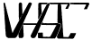

VHSC:
Very High Speed Club
Mycket hög hastighetsklubben
är en höghastighetsklubb för vänner av telegrafihastigheter
på åtminstone 200 tpm (40 wpm).
Allmän information (Källa: VHSCs web-sida)
Radiotelegrafisternas mycket höghastighetsklubb VHSC grundades den förste maj 1961 under beskydd av VERON och DARC och har till syfte att samla radioamatörer som klarar av att sända och ta emot mycket hög hastighetstelegrafi, och gör det för att uppmuntra telegrafitrafik i allmänhete och höghastighetstrafik i synnerhet.
Hur man går med i VHSC
Var aktiv på banden och använd telegrafihastigheter på 200 tpm eller högre, och visa dina färdigheter att läsa och nyckla denna hastighet perfekt. VHSC-medlemmar kan ge dig en rekommendation till ett VHSC-medlemsskap. Fråga inte efter en rekommendation, jaga inte efter den. Bara visa dina färdigheter med säker mottagning och utmärkt nyckling vid hastigheter på åtminstone 200 bmp! En rekommendation kan göras efter en tvåvägs-telegrafikontakt -- med en VHSC-medlem -- som pågick under minst 30 minuter med en telegrafihastighet på 200 bokstäver i minuten eller snabbare. (PARIS-beräkningen, 40 wpm). Säker mottagning skall klaras av av den som söker tillsammans med utmärkt nyckling. Inga tangentbord eller avkodare tillåts under dessa QSO. En rekommendation gäller för högst tre år. Efter att du fått 4 rekommendationer, skicka in din ansökan om VHSC-medlemsskap och 10 IRS eller motsvarande, till VHSC-sekreteraren. Anropssignalen för VHSC-kandidaten kommer att publiceras på vår VHSC-bulletin, som är ett nyhetsblad som skickas till alla medlemmar. Om det inte finns några invändningar hos VHSC-medlemmar inom tre månader kommer VHSC-kandidaten att registreras som VHSC-medlem.
Alla rekommendationer måste visa varaktigheten av de VHSC-test-kontakter och nämna vilken telegrafihastighet som användes under dne VHSC-test-kontakten. Alla ansökningar skall innehålla en försäkran att ansökaren inte använde tangentbord eller avkodare under de fyra (4) test-kontakterna. Ett medlemsskapscertifikat skickas till medlemmarna. Det finns inte någon ytterligare betalning för livsmedlemsskapet. Ansökningar skall skickas till ordföranden i VHSC:
PA0DIN D.J. Hoogma
Schoutstraat 15
6525 XR NIJMEGEN
Nederländerna
E-mail...dingelom (at-symbol) hetnet.nl...
Tillbaka till listan över klubbar
Tillbaka till EuCWs startsida
{% include translated.html %}